RÙA HỘP TRÁN VÀNG
RÙA HỘP TRÁN VÀNG
RÙA HỘP TRÁN VÀNG
RÙA ĐẦU TO
RÙA NÚI VIỀN
RÙA NÚI VÀNG
GIẢI
GIẢI SIN HOE
Rùa hộp trán vàng miền Nam (Cuora picturata), Còn được gọi là rùa hộp trán vàng hay rùa hộp Việt Nam, là loài
rùa hộp đặc hữu của khu vực rừng núi miền Nam Việt Nam. Loài này thuộc họ Geoemydidae và được xem là một trong
những loài rùa cạn bán thủy sinh đặc hữu quý hiếm của Việt Nam.
PHÂN BỐ TỰ NHIÊN
Đây là loài đặc hữu, chỉ được tìm thấy ở vùng núi thuộc các tỉnh Nam Trung Bộ như Phú Yên, Khánh Hòa và Ninh
Thuận.
ĐẶC ĐIỂM NHẬN DẠNG CHÍNH
Kích thước: Chiều dài mai thẳng có thể đạt từ 15-19 cm.
Mai: Có màu nâu cam đến nâu sẫm, vòm cao, thường có các vệt và đốm đen ở phía rìa.
Đầu và Yếm: Đầu có màu kem hoặc vàng với các đường vân xám nhạt. Yếm màu kem, đặc trưng với một đốm đen
lớn trên mỗi tấm yếm.
Phân biệt giới tính: Con đực thường có yếm hơi lõm vào trong, móng và đuôi dài, dày hơn so với con
cái.
ĐẶC ĐIỂM SINH THÁI
Sinh cảnh: Sống trong các khu rừng thường xanh ở độ cao từ 300-600m, thường ẩn náu dưới lớp lá mục hoặc
trong các bụi cây rậm rạp gần suối.
Thức ăn: Thức ăn chủ yếu là giun đất và các loại côn trùng.
Sinh sản: Mỗi năm, rùa cái chỉ đẻ một lứa từ 1-3 trứng.
TÌNH TRẠNG BẢO TỒN
Sách Đỏ IUCN: CR (Cực kỳ Nguy cấp)
Sách Đỏ Việt Nam (2024): CR (Cực kỳ Nguy cấp)
Công ước CITES: Phụ lục I (Cấm buôn bán quốc tế)
Pháp luật Việt Nam: Nghị định 64/2019/NĐ-CP & 84/2021/NĐ-CP
Rùa ba gờ (Malayemys subtrijuga), Hay còn gọi là Snail-eating turtle, là một loài rùa nước ngọt bản địa của
khu vực Đông Nam Á, nổi bật với tính cách hiền lành và khả năng chuyên ăn ốc, nhuyễn thể.
PHÂN BỐ TỰ NHIÊN
Có mặt rộng rãi ở các hệ sinh thái lưu vực sông Mekong, bao gồm Campuchia, Lào, Thái Lan và miền Nam Việt
Nam.
ĐẶC ĐIỂM NHẬN DẠNG CHÍNH
Kích thước: Chiều dài trung bình từ 20-25 cm.
Mai: Nổi bật với 3 gờ chạy dọc trên lưng rất rõ nét, mai thường có màu nâu sẫm hoặc nâu gụ.
Đầu: Có các sọc vàng đặc trưng chạy dọc hai bên mắt xuống cổ, rất dễ nhận diện.
Yếm: Yếm màu vàng có các đốm đen viền quanh.
ĐẶC ĐIỂM SINH THÁI
Sinh cảnh: Vùng nước chảy chậm như ao hồ, đầm lầy, kênh rạch và ruộng lúa.
Thức ăn: Đặc thù ăn động vật thân mềm (ốc, trai), đôi khi ăn tôm, cua nhỏ.
Sinh sản: Đẻ từ 3-10 trứng mỗi lứa trong mùa khô.
TÌNH TRẠNG BẢO TỒN
Sách Đỏ IUCN: NT (Sắp bị đe dọa)
Công ước CITES: Phụ lục II
Đe dọa: Mất môi trường sống do đô thị hóa và bị săn bắt làm thức ăn.
Rùa sao Ấn Độ (Geochelone elegans), Là một trong những loài rùa cạn có vẻ ngoài lộng lẫy nhất thế giới. Nhờ
hoa văn hình ngôi sao rực rỡ trên mai, chúng rất được ưa chuộng trong giới nuôi sinh vật cảnh.
PHÂN BỐ TỰ NHIÊN
Phân bố chủ yếu tại các vùng khô hạn, trảng cỏ và rừng rụng lá ở Ấn Độ, Pakistan và Sri Lanka.
ĐẶC ĐIỂM NHẬN DẠNG CHÍNH
Kích thước: Đạt từ 25-30 cm khi trưởng thành.
Mai: Vòm nhô rất cao. Mỗi tâm vảy mai có một đốm sáng, từ đó tỏa ra các đường sọc vàng trên nền đen tạo
thành họa tiết ngôi sao.
Công dụng hoa văn: Họa tiết ngôi sao giúp chúng ngụy trang cực tốt trong các bụi cỏ khô.
ĐẶC ĐIỂM SINH THÁI
Sinh cảnh: Thích nghi với môi trường bán hoang mạc, trảng cỏ khô cằn và rừng khô.
Thức ăn: Chế độ ăn hoàn toàn thực vật, chủ yếu là cỏ khô, hoa, trái cây rụng và lá cây mọng nước.
Tập tính: Hoạt động chủ yếu vào sáng sớm và chiều muộn để tránh cái nóng gay gắt.
TÌNH TRẠNG BẢO TỒN
Sách Đỏ IUCN: VU (Sắp nguy cấp)
Công ước CITES: Phụ lục I (Cấm buôn bán thương mại quốc tế)
Mối đe dọa chính: Bị săn bắt ráo riết để phục vụ thị trường thú cưng chợ đen.
Rùa cổ rắn (Chelodina longicollis), Hay rùa cổ dài phương Đông (Eastern long-necked turtle), là một loài rùa
thủy sinh cực kỳ độc đáo thuộc nhóm rùa cổ gập (Pleurodira) của châu Úc.
PHÂN BỐ TỰ NHIÊN
Phân bố rộng rãi ở các vùng nước ngọt phía đông nước Úc, từ Queensland kéo dài xuống Nam Úc.
ĐẶC ĐIỂM NHẬN DẠNG CHÍNH
Kích thước: Mai dài khoảng 25-30 cm, nặng trung bình 1.5 - 2 kg.
Đặc điểm cổ: Chiếc cổ có thể dài bằng toàn bộ chiều dài mai. Khác với rùa thường, chúng gập cổ sang một
bên để giấu dưới mép mai thay vì rụt thẳng vào trong.
Tự vệ: Khi bị đe dọa, chúng tiết ra một chất dịch có mùi hôi cực kỳ khó chịu từ tuyến hôi ở
háng.
ĐẶC ĐIỂM SINH THÁI
Sinh cảnh: Sông suối chảy chậm, đầm lầy, ao hồ nội địa.
Thức ăn: Loài ăn thịt hung dữ. Sử dụng chiếc cổ dài phóng ra như rắn để chộp cá, nòng nọc, và động vật
giáp xác nhỏ.
Di cư: Khả năng di chuyển trên cạn rất tốt để tìm kiếm các vũng nước mới vào mùa hạn hán.
TÌNH TRẠNG BẢO TỒN
Sách Đỏ IUCN: LC (Ít quan tâm)
Tình trạng: Quần thể hiện tại tương đối ổn định, tuy nhiên thường xuyên bị tử vong khi băng qua đường
bộ.
Rùa cạn Sulcata (Centrochelys sulcata), Còn gọi là rùa cạn sa mạc châu Phi, đây là loài rùa cạn lớn thứ ba
trên thế giới và lớn nhất trong số các loài rùa ở lục địa châu Phi.
PHÂN BỐ TỰ NHIÊN
Sinh sống dọc theo rìa phía nam của sa mạc Sahara, trải dài qua khu vực Sahel từ Senegal đến Sudan.
ĐẶC ĐIỂM NHẬN DẠNG CHÍNH
Kích thước khủng: Có thể đạt chiều dài mai trên 80 cm và nặng từ 40 đến 100 kg.
Mai và Da: Toàn bộ cơ thể có màu vàng cát hoặc nâu nhạt để phản xạ ánh nắng sa mạc. Lớp vảy sừng mọc
nhô ra ở hai chi trước như áo giáp.
Tuổi thọ: Rất cao, có thể sống từ 70 đến hơn 100 năm trong điều kiện chăm sóc tốt.
ĐẶC ĐIỂM SINH THÁI
Sinh cảnh: Thích nghi tuyệt vời với hoang mạc khô hạn và xavan. Chúng đào các hang ngầm rất sâu (tới
15m) để làm nơi trú ẩn, tránh cái nóng đổ lửa.
Thức ăn: Thực vật sa mạc nhiều xơ, cỏ khô, cỏ ba lá và thậm chí ăn cả xương rồng.
Nước: Thu nhận hầu hết nước từ thực phẩm và có thể nhịn uống nước trong nhiều tháng.
TÌNH TRẠNG BẢO TỒN
Sách Đỏ IUCN: EN (Nguy cấp)
Công ước CITES: Phụ lục II
Vấn đề bảo tồn: Chịu sức ép từ suy thoái môi trường sa mạc, chăn thả gia súc quá mức và bị bắt làm thú
cưng.
Rùa hộp lưng đen (Cuora amboinensis), Một trong những loài rùa nước ngọt và bán thủy sinh phổ biến và quen
thuộc nhất ở Đông Nam Á, nổi bật với khả năng đóng kín mai như một chiếc hộp kiên cố.
PHÂN BỐ TỰ NHIÊN
Phân bố trải dài từ vùng Đông Ấn Độ, qua bán đảo Đông Dương, đến tận các đảo của Indonesia và
Philippines.
ĐẶC ĐIỂM NHẬN DẠNG CHÍNH
Kích thước: Thường đạt khoảng 15-20 cm, nặng tầm 1.0 - 1.5 kg.
Mai: Vòm hình bán cầu, trơn láng, màu đen bóng hoặc xám sẫm.
Đầu: Đầu đen với 3 dải màu vàng chạy song song kéo dài từ mõm xuống tận cổ.
Yếm khép kín: Yếm bụng có khớp nối (hinge) vô cùng linh hoạt. Khi gặp nguy hiểm, rùa rụt đầu tứ chi vào
và khép kín nắp yếm lại, không chừa một khe hở.
ĐẶC ĐIỂM SINH THÁI
Sinh cảnh: Rất đa dạng: từ ao hồ tĩnh lặng, đầm lầy, kênh rạch, cho đến ruộng lúa nước nông.
Thức ăn: Rất phàm ăn và ăn tạp, chúng xơi từ thực vật thủy sinh, nấm, trái cây rụng cho đến côn trùng
và cá nhỏ.
TÌNH TRẠNG BẢO TỒN
Sách Đỏ IUCN: EN (Nguy cấp)
Công ước CITES: Phụ lục II
Tình trạng: Đang bị khai thác cạn kiệt để làm thực phẩm, dược liệu cổ truyền và sinh vật cảnh.
Rùa cá sấu (Macrochelys temminckii), Được mệnh danh là 'khủng long' của thế giới rùa nước ngọt, loài vật sở
hữu ngoại hình gai góc thời tiền sử và lực cắn có thể làm dập nát xương.
PHÂN BỐ TỰ NHIÊN
Là loài đặc hữu của hệ thống sông ngòi, hồ đầm lầy trải dài khắp khu vực Đông Nam Hoa Kỳ.
ĐẶC ĐIỂM NHẬN DẠNG CHÍNH
Kích thước khổng lồ: Mai có thể dài từ 40-80 cm, cá thể đực lớn nhất có thể nặng hơn 100 kg.
Ngoại hình: Sở hữu 3 hàng gai sừng gồ ghề nổi cao dọc trên mai, trông giống hệt như lưng cá sấu.
Đầu và Hàm: Đầu cực lớn không thể rụt hết vào mai. Cặp hàm sắc bén có hình dáng giống mỏ chim ưng với
lực cắn khủng khiếp.
ĐẶC ĐIỂM SINH THÁI
Sinh cảnh: Sống ẩn dật dưới đáy các con sông chảy chậm, ao đầm sâu nhiều bùn và cành cây mục.
Thức ăn: Sát thủ phục kích. Nằm bất động há miệng, ngọ nguậy phần phụ thịt trên lưỡi trông như con giun
đất để nhử cá. Ăn thịt hầu hết mọi thứ từ cá, rắn, chim nước đến rùa khác.
TÌNH TRẠNG BẢO TỒN
Sách Đỏ IUCN: VU (Sắp nguy cấp)
Mối đe dọa: Thu hẹp sinh cảnh, đắp đập ngăn sông và săn bắt để lấy thịt.
Rùa Leopard (Stigmochelys pardalis), Một trong những loài rùa cạn lớn và có hoa văn đẹp nhất ở lục địa châu
Phi, được đặt tên theo những đốm màu nổi bật giống hệt bộ lông của loài báo hoa mai.
PHÂN BỐ TỰ NHIÊN
Sinh sống rải rác khắp các vùng xavan, thảo nguyên khô hạn trải dài từ Đông Phi xuống đến tận Nam Phi.
ĐẶC ĐIỂM NHẬN DẠNG CHÍNH
Kích thước: Là loài rùa cạn lớn thứ tư thế giới, dài 40-50 cm và nặng từ 13-18 kg.
Hoa văn: Mai vòm cao hình chuông. Trên nền mai vàng rơm hoặc ngà voi được điểm xuyết bởi các vệt đốm
đen bất đối xứng tuyệt đẹp, hoa văn rất sắc nét ở con non.
Phòng vệ: Khi giật mình thường phát ra tiếng rít lớn và phóng nước tiểu nếu bị nhấc lên.
ĐẶC ĐIỂM SINH THÁI
Sinh cảnh: Thảo nguyên khô hạn, vùng bán hoang mạc nơi có nhiều bụi cây gai góc.
Thức ăn: Chế độ ăn 100% thực vật. Rất thích gặm cỏ, ăn các bụi cây gai, trái cây rụng và đặc biệt là
các loài cây xương rồng, sen đá mọng nước.
TÌNH TRẠNG BẢO TỒN
Sách Đỏ IUCN: LC (Ít quan tâm)
Công ước CITES: Phụ lục II
Thực trạng: Số lượng trong tự nhiên khá phong phú, tuy nhiên vẫn cần quản lý nghiêm nạn buôn bán thú
cưng quốc tế.
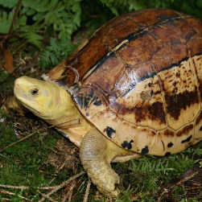
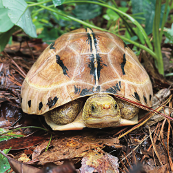
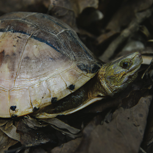
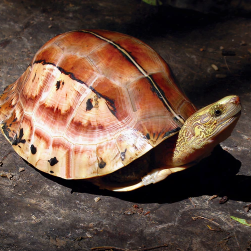
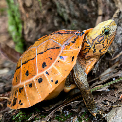
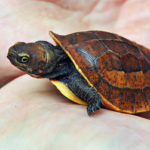
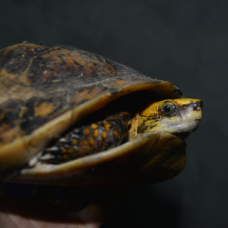
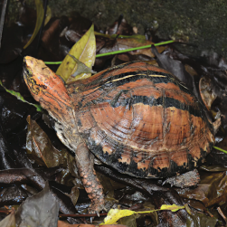
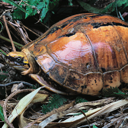
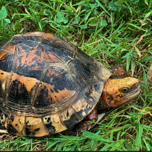
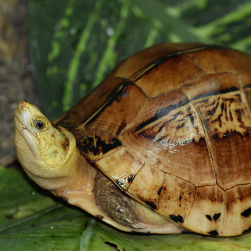
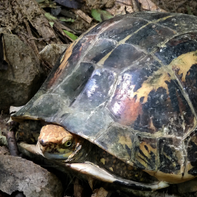
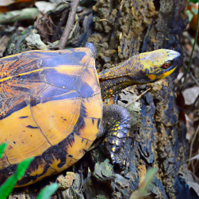
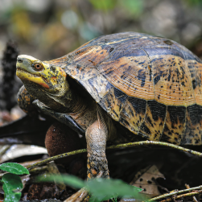
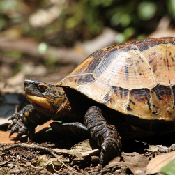
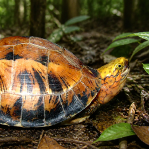
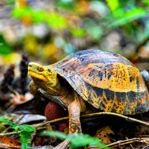
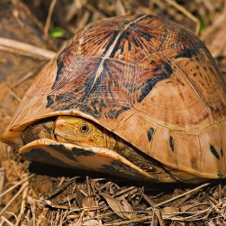
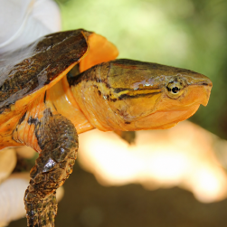
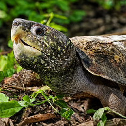
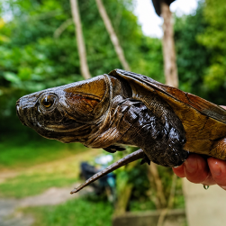
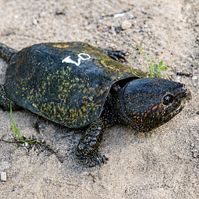
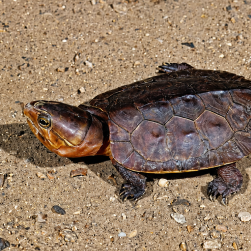
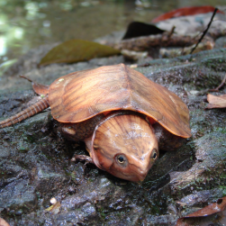
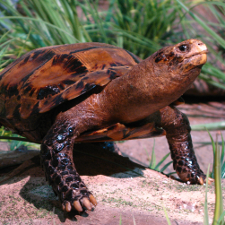
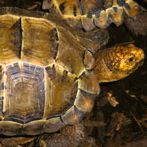
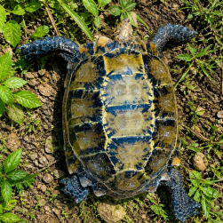
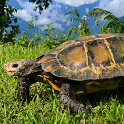
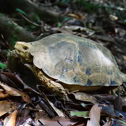
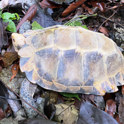
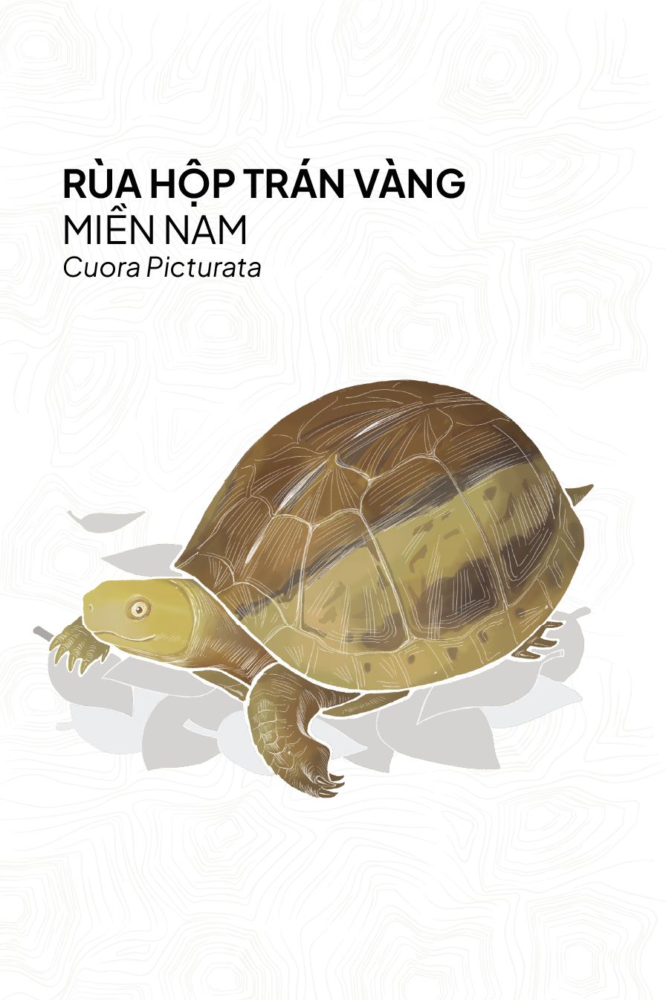
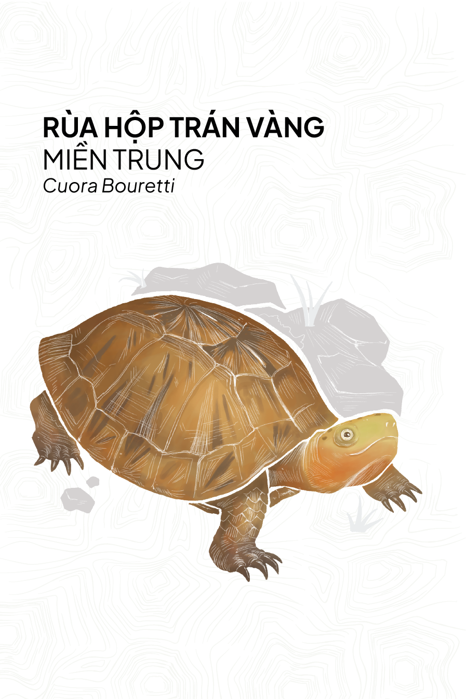
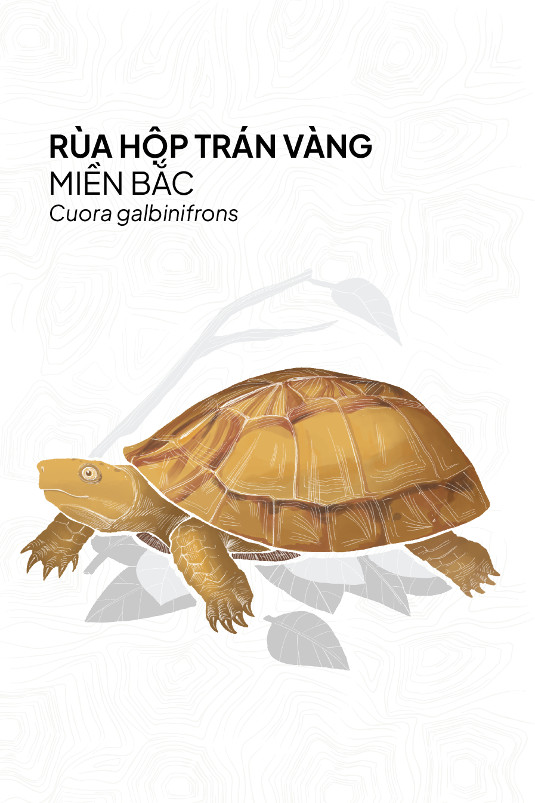
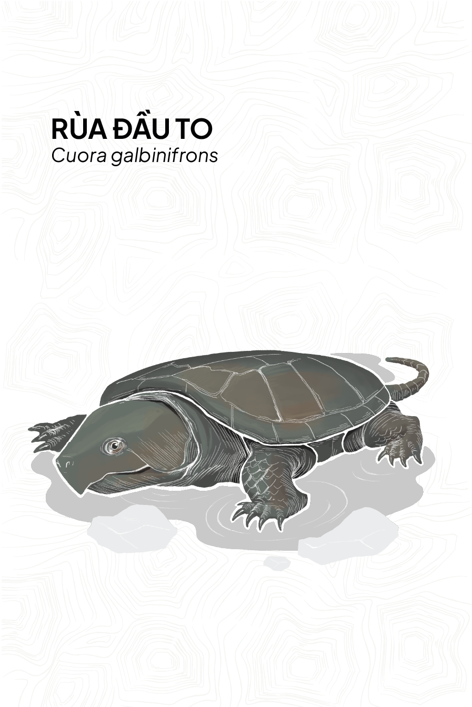
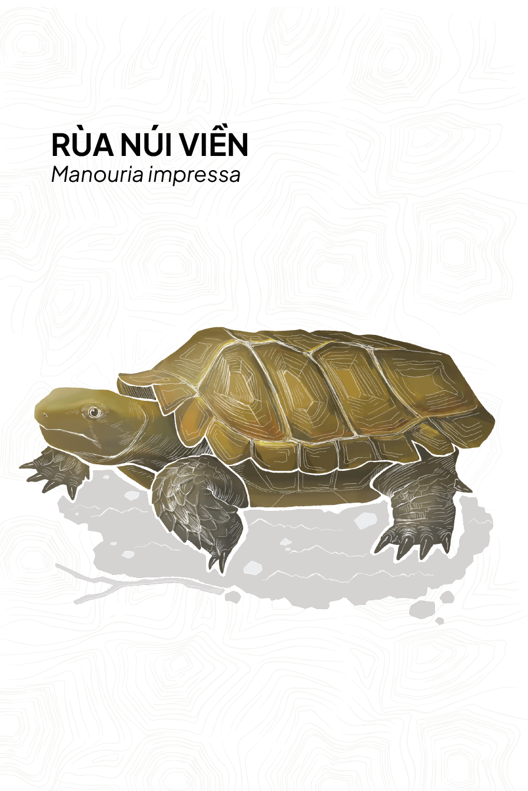
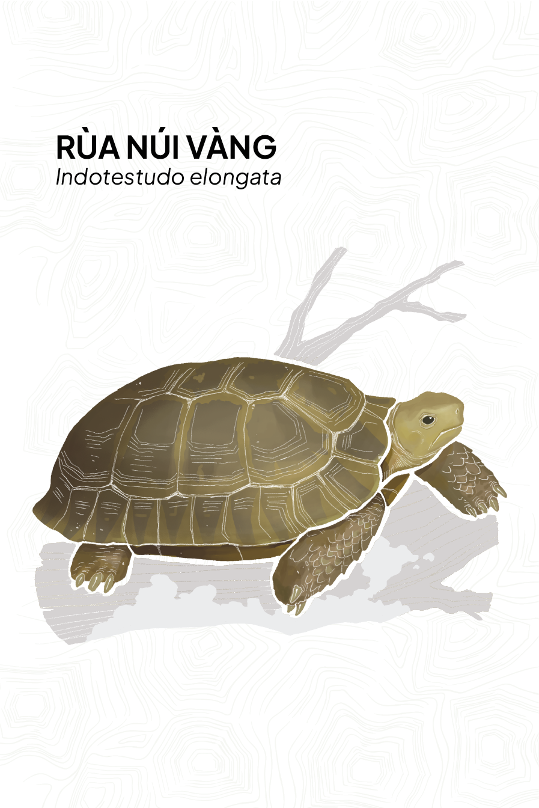
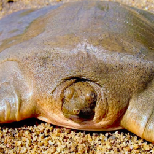
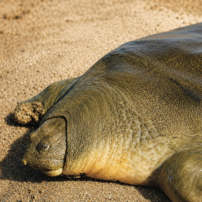
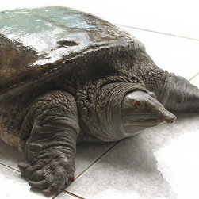
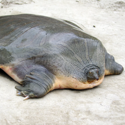
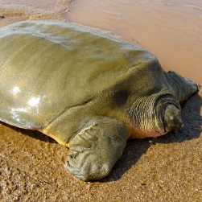
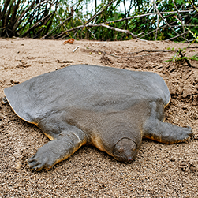
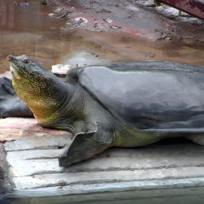
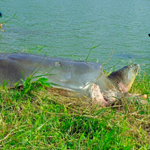
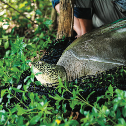
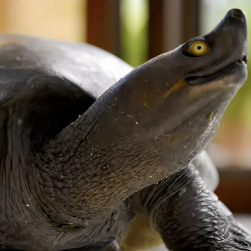
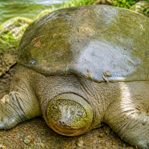
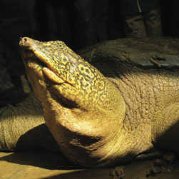